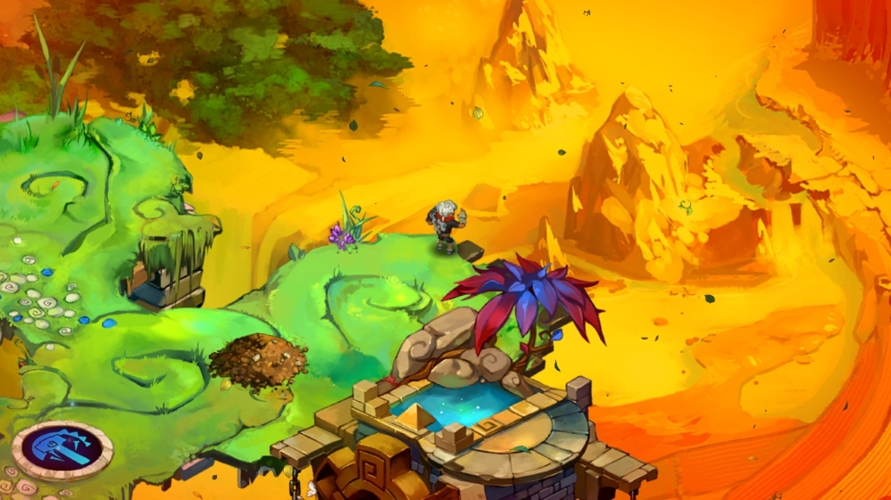
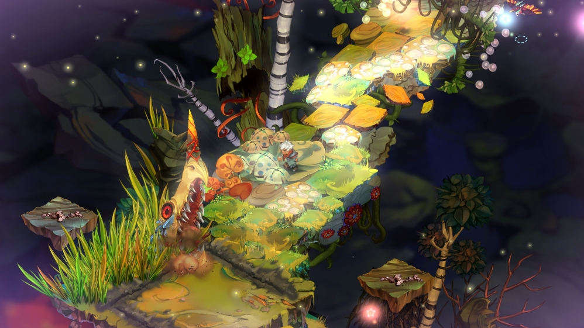
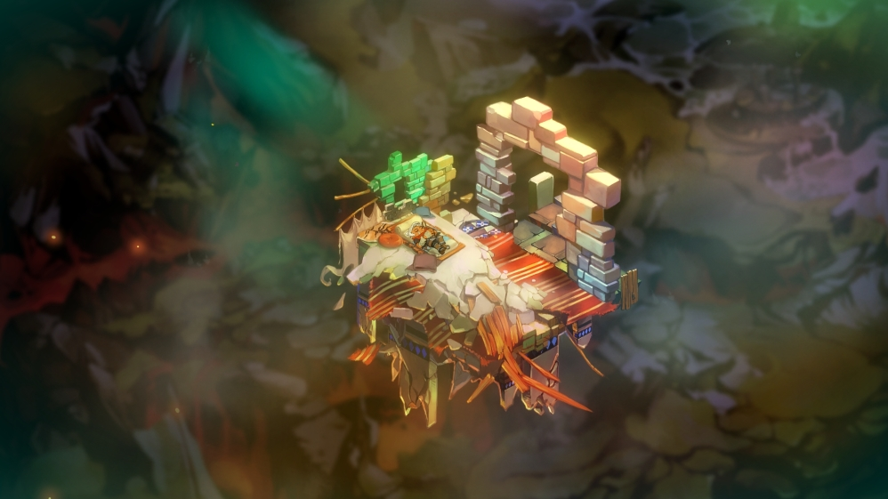
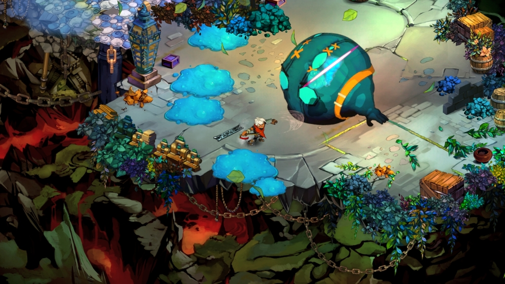

Купив я гру якось на розпродажу у Steam і вона пролежала (чи як вони там зберігаються дані на сервері) у мене в бібліотеці щонайменше рік. Отож, залишився я якось вдома без дружини і сина та почав переглядати які ігри маю. Побачивши мальовничі малюнки на сторінці гри вирішив спробувати. Чекати заватнаження довго не довелось бо "важить" вона небагато у порівнянні з іншими і за кілька хвиилн гри я зрозумів, що не помилився.

Отож... гра дуже мальовнича. Все, що я бачив було намальовано художником від руки. Потім з'ясував, що все це малювала дівчина. Малювала з душею і вкладала часточку серця в кожне зображення. Мої очі хапалися за кожну дрібничку і вже від цього я отримував задоволення.
Наступне, від чого я отримував задоволення - музика. Було таке відчуття, що музика лилася з тих малюнків, що я бачив. І вона повністю відповідала тому, що відбувалося. І так було на протязі усієї гри. Музика мене лякала, заспокоювала і взагалі рухала мною до закінчення цієї чудової повісті.

Що ж це була за повість?.. Головний герой, якого у грі називають просто Хлопчина, прокидається від того, що навколо все розвалюється і він намагється врятуватися і зрозуміти що сталося. Я міг би розказати більше, але тоді вам вже не буде так цікаво грати в неї. Це повість войовнича, емоційна, про взаємодопомогу та зраду, про страшну таємницю та вибір. Усю цю повість розповідає таємничий голос. Голос сильний, мудрий. Я неначе слухав діда, який розповідав про своє минуле і намагався мене чомусь навчити. Знання англійської мови черговий раз стало мені у нагоді.

Краще я вам розкажу про геймлей (вибачте за англомовні слова, але інших я не зміг знайти). Грати з геймпадом - одне задоволення бо гра його повністю підтримує і мені навіть здається, що на клавіатурі грати було б справжнє пекло. А може це лише я так думаю. Керування дуже просте та зрозуміле. Є основна атака та спеціальна атака. Є різні види озброєння щоб кожний знайшов те, що йому довподоби (меч, молот, рушниця, арбалет та багато іншого). Я полюбляю рушниці так арбалети, однак кілька разів вибирав інше, бо воно краше підходило під ситуацію. Ще можна варити різне зілля і покращувати зброю. Для цього потрібні різні складові тож якщо гарненько порозглядати той прекрасний ігровий світ можна знайти. Однак іх не так вже й багато, тому я ще проходи різні виклики щоб зібрати більше.
Усі ці покращення стануть у нагоді якщо ви плануєте зробити гру складнішою. Я не написав "рівень складності" бо то було б не точно. У грі можна знайти храми в яких можна активувати різні реліквії, що так чи інакше впливають на гру. Іх там більше десяти і дозволять зробити гру складнішою таким чином, що вам підійде найбільше. Я навіть спробував усі реліквії і гра стала дуже складною, але я зміг пройти у режимі 'Нова Гра +'. Гра ніколи не здавалася нудною чи одноманітною. Постійно натрапляв на нових ворогів і шукав нові підходи до їх знищення.

Ще мене затягнуло у гру на годин п'ять - це темп гри. Він не давав мені зупинитися, однак з іншого боку я не поспішав і я просто грав. Грав поки не пройшов десь через годин 11. Після того побавчив, що відкрився новий режим - Нова Гра +. Це коли починаеш нову гру з усім, що назбирав за попереднє проходження. Пройшов другий раз. Після того помітив, що ще не отримував кілка досягнень. І на останок пройшов ще раз зробивши інший вибір у деяких ситуаціях, щоб побачити чи зміниться щось.
Для першого огляду вибрав її, бо вона залишила по собі дуже теплі емоції. Хоча вона і вийшла досить давно, це не означає, що в неї пізно грати. Грав я в неї більше року тому і мої спогади можуть бути не зовсім свіжими, але я точно пам'ятаю, що хотів усім порадити в неї пограти.
Буду писати ще і може мої оглдяди і статті стануть цікавішими. Залишайте коментарі у нашій групі у Steam та підписуйтеся на кураторську сторінку.
Реклама